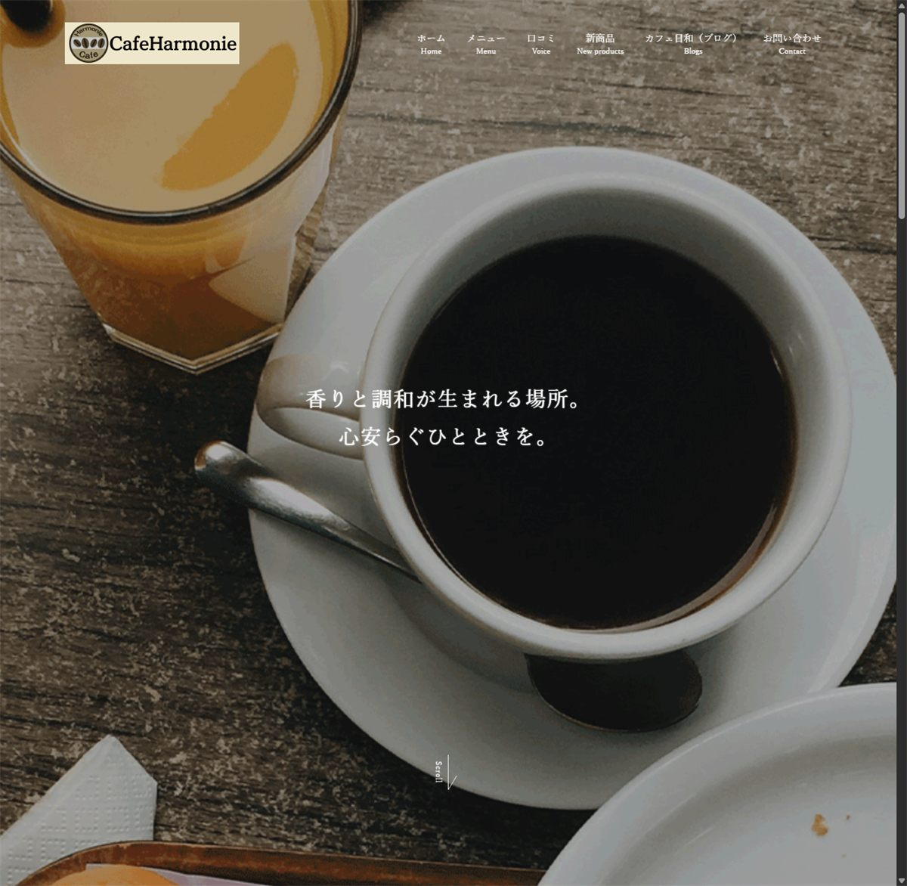
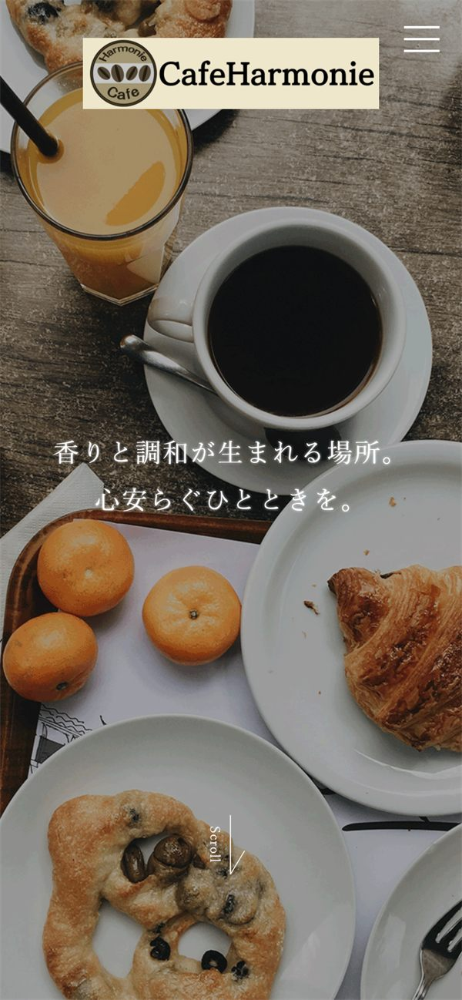

NO.03
ケーススタディ／WordPress
Cafe Harmonie
個人経営のこだわりカフェから、ブログ付きWebサイトの制作を依頼された想定のケーススタディです。オーナーへの提案文でデザインの方針・サイト構成・お見積もり・納期を示し、既存のWordPressテーマ「Bayside Cafe」を使って構築しました。


01概要
オーナー自ら選んだ豆をハンドドリップで提供する、個人経営のこだわりカフェを想定しました。カフェの魅力やオーナーのこだわりが伝わり、初めて訪れる方にも安心感を持ってもらえるサイトを目指しています。
ゼロからテーマを作るのではなく、カフェに合った既存テーマを選んで使うことで、費用と納期をおさえる提案にしました。
02提案内容
-
デザインの方針
メインカラーにキャラメルブラウンを採用し、コーヒーや木の温もりを感じられるナチュラルなデザイン。シンプルで見やすく、初めての方にも安心感を持ってもらえることを大切にしました。
-
作業内容
- WordPressのインストール・初期設定
- テーマ選定
- トップページ・固定ページの制作
- 画像の選定・挿入
- レスポンシブ対応
- お問い合わせフォームの設置
- Googleマップの連携
-
お見積もり
50,000円（税込・サーバーとドメインの費用は別途）
既存テーマを使うことで、ブログ付きのサイトを個人店でも依頼しやすい金額におさえました。
-
スケジュール（約3週間）
- 1週目ヒアリング・構成の確認・サイト構築
- 2週目デザイン・中間チェック・修正
- 3週目最終確認・公開
03サイト構成
- HOME メインビジュアルとキャッチコピー、店内の写真のスライド
- CONCEPT オーナーの想いとコーヒーへのこだわり
- MENU おすすめメニューをトップに掲載し、メニュー一覧へ
- お客様の声 来店した方の感想と、口コミ一覧ページ
- GALLERY 店内・コーヒー・スイーツの写真、新商品や季節限定メニュー
- NEWS ブログ「カフェ日和」を新しい順に表示し、ブログ一覧へ
- ACCESS 店舗情報とGoogleマップ、お問い合わせへの導線
- お問い合わせ お問い合わせフォーム（Contact Form 7）
04工夫した点
-
POINT 01
ひと目でカフェと分かる写真選び
トップページのカルーセルを見るだけで、何のサイトなのかがひと目で分かるように写真を選びました。コーヒーやパン、テーブルの写真を大きく見せることで、文章を読む前に「カフェのサイトだ」と伝わります。
-
POINT 02
初めての方の不安を減らす
お客様の声を載せて、来店を迷っている方にも安心感を持ってもらえるようにしました。ACCESSからお問い合わせへすぐ移動できる導線も用意しています。
-
POINT 03
オーナーが自分で更新できる
お知らせはブログ「カフェ日和」として投稿から更新でき、トップページには新しい記事から順に表示されます。新商品や季節限定メニューの紹介も、写真付きで追加できます。